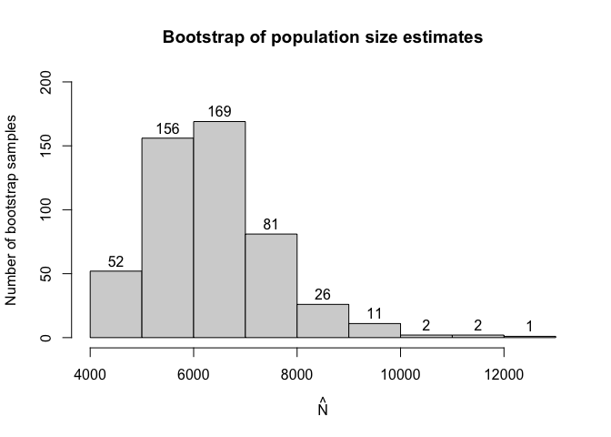

Capture-recapture type experiments are used to estimate the total population size in situations when observing only a part of such population is feasible. In recent years these types of experiments have seen more interest.
Single source models are distinct from other capture-recapture models because we cannot estimate the population size based on how many units were observed in two or three sources which is the standard approach.
Instead in single source models we utilise count data regression models on positive distributions (i.e. on counts greater than 0) where the dependent variable is the number of times a particular unit was observed in source data.
This package aims to implement already existing and introduce new methods of estimating population size from single source to simplify the research process.
Currently we’ve implemented most of the frequentist approaches used in literature such as:
- Zero truncated Poisson, geometric and negative binomial regression.
- Zero truncated one inflated and one inflated zero truncated Poisson and geometric models. (Negative binomial is currently in development.)
- Zero one truncated Poisson geometric and negative binomial models.
- Generalised Chao and Zelterman’s models based on logistic regression.
- Three types of bootstrap parametric, semi-parametric and non parametric.
- And a wide range of additional functionalities associated with (vector) generalised linear models relevant to the topic.
Installation
You can install the development version of singleRcapture from GitHub with:
# install.packages("devtools")
remotes::install_github("ncn-foreigners/singleRcapture")or install the current stable version from CRAN with:
install.packages(singleRcapture)Examples
The main function of this package is estimatePopsize which fitts regression on specified distribution and then uses fitted regression to estimate the population size.
Lets look at a model from 2003 publication : Point and interval estimation of the population size using the truncated Poisson regression model Heijden, Peter GM van der et al. The call to estimatePopsize will look very similar to anyone who used the stats::glm function:
library(singleRcapture)
model <- estimatePopsize(
formula = capture ~ gender + age + nation, # specify formula
data = netherlandsimmigrant,
popVar = "analytic", # specify
model = "ztpoisson", # distribution used
method = "IRLS", # fitting method one of three currently supported
controlMethod = controlMethod(silent = TRUE) # ignore convergence at half step warning
)
summary(model) # a summary method for singleR class with standard glm-like output and population size estimation resutls
#>
#> Call:
#> estimatePopsize(formula = capture ~ gender + age + nation, data = netherlandsimmigrant,
#> model = "ztpoisson", method = "IRLS", popVar = "analytic",
#> controlMethod = controlMethod(silent = TRUE))
#>
#> Pearson Residuals:
#> Min. 1st Qu. Median Mean 3rd Qu. Max.
#> -0.486442 -0.486442 -0.298080 0.002093 -0.209444 13.910844
#>
#> Coefficients:
#> -----------------------
#> For linear predictors associated with: lambda
#> Estimate Std. Error z value P(>|z|)
#> (Intercept) -1.3411 0.2149 -6.241 4.35e-10 ***
#> gendermale 0.3972 0.1630 2.436 0.014832 *
#> age>40yrs -0.9746 0.4082 -2.387 0.016972 *
#> nationAsia -1.0926 0.3016 -3.622 0.000292 ***
#> nationNorth Africa 0.1900 0.1940 0.979 0.327398
#> nationRest of Africa -0.9106 0.3008 -3.027 0.002468 **
#> nationSurinam -2.3364 1.0136 -2.305 0.021159 *
#> nationTurkey -1.6754 0.6028 -2.779 0.005445 **
#> ---
#> Signif. codes: 0 '***' 0.001 '**' 0.01 '*' 0.05 '.' 0.1 ' ' 1
#>
#> AIC: 1712.901
#> BIC: 1757.213
#> Residual deviance: 1128.553
#>
#> Log-likelihood: -848.4504 on 1872 Degrees of freedom
#> Number of iterations: 8
#> -----------------------
#> Population size estimation results:
#> Point estimate 12690.35
#> Observed proportion: 14.8% (N obs = 1880)
#> Std. Error 2808.167
#> 95% CI for the population size:
#> lowerBound upperBound
#> normal 7186.446 18194.26
#> logNormal 8431.276 19718.31
#> 95% CI for the share of observed population:
#> lowerBound upperBound
#> normal 10.332930 26.16036
#> logNormal 9.534284 22.29793We implemented a method for plot function to visualise the model fit and other usefull diagnostic information. One of which is rootogram, a type of plot that compares fitted and observed marginal frequencies:
plot(model, plotType = "rootogram")The possible values for plotType argument are:
-
qq- the normal quantile-quantile plot for pearson residuals. -
marginal- amatplotcomparing fitted and observed marginal frequencies. -
fitresid- plot of linear predictor values contrasted with pearson residuals. -
bootHist- histogram of bootstrap sample. -
rootogram- rootogram, example presented above. -
dfpopContr- contrasting two deletion effects to identify presence of influential observations. -
dfpopBox- boxplot of results from dfpopsize function see its documentation. -
scaleLoc- scale-location plot. -
cooks- plot ofcooks.valuesfor distributions for which it is defined. -
hatplot- plot ofhatvalues. -
strata- plot of confidence intervals for selected su populations.
a user can also pass arguments to specify additional information such as plot title, subtitle etc. similar to calling plot on some data. For more info check plot.singleR method documentation.
As we have seen there are some significant differences between fitted and observed marginal frequencies. To check our intuition let’s perform goodness of fit test between fitted and observed marginal frequencies.
To do it we call a summary function of marginalFreq function which computes marginal frequencies for the fitted singleR class object:
summary(marginalFreq(model), df = 2, dropl5 = "group")
#> Test for Goodness of fit of a regression model:
#>
#> Test statistics df P(>X^2)
#> Chi-squared test 50.06 2 1.3e-11
#> G-test 34.31 2 3.6e-08
#>
#> --------------------------------------------------------------
#> Cells with fitted frequencies of < 5 have been grouped
#> Names of cells used in calculating test(s) statistic: 1 2 3Finally let us check if we have any influential observations. We will do this by comparing the deletion effect of every observation on population size estimate by removing it entirely from the model (from population size estimate and regression) and by only omitting it in pop size estimation (this is what is called the contribution of an observation). If observation is not influential these two actions should have the approximately the same effect:
plot(model, plotType = "dfpopContr")
it is easy to deduce from the plot above that we have influential observations in our dataset (one in particular).
Lastly singleRcapture offers some posthoc procedures for example a function stratifyPopsize that estimates sizes of user specified sub populations and returns them in a data.frame:
stratifyPopsize(model, alpha = c(.01, .02, .03, .05), # different significance level for each sub population
stratas = list(
"Females from Surinam" = netherlandsimmigrant$gender == "female" & netherlandsimmigrant$nation == "Surinam",
"Males from Turkey" = netherlandsimmigrant$gender == "male" & netherlandsimmigrant$nation == "Turkey",
"Younger males" = netherlandsimmigrant$gender == "male" & netherlandsimmigrant$age == "<40yrs",
"Older males" = netherlandsimmigrant$gender == "male" & netherlandsimmigrant$age == ">40yrs"
))
#> Observed Estimated ObservedPercentage StdError normalLowerBound
#> 1 20 931.4685 2.147147 955.0668 -1528.62062
#> 2 78 1291.2513 6.040652 741.0066 -432.58790
#> 3 1391 7337.0716 18.958518 1282.1412 4554.70930
#> 4 91 1542.1889 5.900704 781.4751 10.52593
#> normalUpperBound logNormalLowerBound logNormalUpperBound name
#> 1 3391.558 119.2661 8389.170 Females from Surinam
#> 2 3015.090 405.4127 4573.791 Males from Turkey
#> 3 10119.434 5134.8117 10834.789 Younger males
#> 4 3073.852 630.7551 3992.676 Older males
#> confLevel
#> 1 0.01
#> 2 0.02
#> 3 0.03
#> 4 0.05stratas argument may be specified in various ways for example:
stratifyPopsize(model, stratas = ~ gender / age)
#> Observed Estimated ObservedPercentage StdError normalLowerBound
#> 1 398 3811.092 10.443201 1153.9742 1549.34401
#> 2 1482 8879.260 16.690579 1812.0803 5327.64833
#> 3 378 3169.827 11.924942 880.9485 1443.19944
#> 4 1391 7337.072 18.958518 1282.1412 4824.12101
#> 5 20 641.265 3.118835 407.5266 -157.47248
#> 6 91 1542.189 5.900704 781.4751 10.52593
#> normalUpperBound logNormalLowerBound logNormalUpperBound
#> 1 6072.840 2189.0441 6902.137
#> 2 12430.873 6090.7756 13354.885
#> 3 4896.454 1904.3123 5484.620
#> 4 9850.022 5306.3301 10421.086
#> 5 1440.002 212.3382 2026.727
#> 6 3073.852 630.7551 3992.676
#> name confLevel
#> 1 gender==female 0.05
#> 2 gender==male 0.05
#> 3 genderfemale:age<40yrs 0.05
#> 4 gendermale:age<40yrs 0.05
#> 5 genderfemale:age>40yrs 0.05
#> 6 gendermale:age>40yrs 0.05singleRcapture package also includes option to use common non standard argument such as significance levels different from usual 5%:
set.seed(123)
modelInflated <- estimatePopsize(
formula = capture ~ gender + age,
data = netherlandsimmigrant,
model = "oiztgeom",
method = "IRLS",
# control parameters for population size estimation check documentation of controlPopVar
controlPopVar = controlPopVar(
alpha = .01, # significance level
)
)
#> Warning in singleRcaptureinternalIRLSmultipar(dependent = y, covariates = X, :
#> Convergence at halfstepsize
summary(modelInflated)
#>
#> Call:
#> estimatePopsize(formula = capture ~ gender + age, data = netherlandsimmigrant,
#> model = "oiztgeom", method = "IRLS", controlPopVar = controlPopVar(alpha = 0.01,
#> ))
#>
#> Pearson Residuals:
#> Min. 1st Qu. Median Mean 3rd Qu. Max.
#> -0.357193 -0.357193 -0.357193 0.000343 -0.287637 10.233607
#>
#> Coefficients:
#> -----------------------
#> For linear predictors associated with: lambda
#> Estimate Std. Error z value P(>|z|)
#> (Intercept) -1.5346 0.1846 -8.312 < 2e-16 ***
#> gendermale 0.3863 0.1380 2.800 0.00512 **
#> age>40yrs -0.7788 0.2942 -2.648 0.00810 **
#> -----------------------
#> For linear predictors associated with: omega
#> Estimate Std. Error z value P(>|z|)
#> (Intercept) -1.7591 0.3765 -4.673 2.97e-06 ***
#> ---
#> Signif. codes: 0 '***' 0.001 '**' 0.01 '*' 0.05 '.' 0.1 ' ' 1
#>
#> AIC: 1736.854
#> BIC: 1759.01
#> Residual deviance: 1011.271
#>
#> Log-likelihood: -864.4272 on 3756 Degrees of freedom
#> Number of iterations: 6
#> -----------------------
#> Population size estimation results:
#> Point estimate 5661.521
#> Observed proportion: 33.2% (N obs = 1880)
#> Std. Error 963.9019
#> 99% CI for the population size:
#> lowerBound upperBound
#> normal 3178.674 8144.367
#> logNormal 3861.507 9096.677
#> 99% CI for the share of observed population:
#> lowerBound upperBound
#> normal 23.08344 59.14416
#> logNormal 20.66689 48.68565and the option to estimate standard error of population size estimate by bootstrap, models with more than one distribution parameter being dependent on covariates and some non standard link functions for example:
modelInflated2 <- estimatePopsize(
formula = capture ~ age,
data = netherlandsimmigrant,
popVar = "bootstrap",
model = oiztgeom(omegaLink = "cloglog"),
method = "IRLS",
controlPopVar = controlPopVar(
B = 500,# number of boostrap samples
alpha = .01, # significance level
# type of bootstrap see documentation for estimatePopsize
bootType = "semiparametric",
# control regression fitting on bootstrap samples
bootstrapFitcontrol = controlMethod(
epsilon = .Machine$double.eps,
silent = TRUE,
stepsize = 2
)
),
controlModel = controlModel(omegaFormula = ~ gender) # put covariates on omega i.e. the inflation parameter
)
#> Warning in estimatePopsize(formula = capture ~ age, data = netherlandsimmigrant, : The (analytically computed) hessian of the score function is not negative define.
#> NOTE: Second derivative test failing does not
#> necessarily mean that the maximum of score function that was found
#> numericaly is invalid since R^k is not a bounded space.
#> Additionally in one inflated and hurdle models second derivative test often fails even on valid arguments.
#> Warning in estimatePopsize(formula = capture ~ age, data =
#> netherlandsimmigrant, : Switching from observed information matrix to Fisher
#> information matrix because hessian of log-likelihood is not negative define.
popSizeEst(modelInflated2)
#> Point estimate: 5496.376
#> Variance: 1440065
#> 99% confidence intervals:
#> lowerBound upperBound
#> 4259.711 10877.648the results are significantly different (the warning issued concerns the second derivative test for existence of local minimum, here it was inconclusive but we manually checked that fitting process found the optimal regression coefficients it’s here to provide more information to the user):

and information criteria support the favour model:
#> First model: AIC = 1736.854 BIC = 1759.01
#> Second model: AIC = 1734.803 BIC = 1756.959